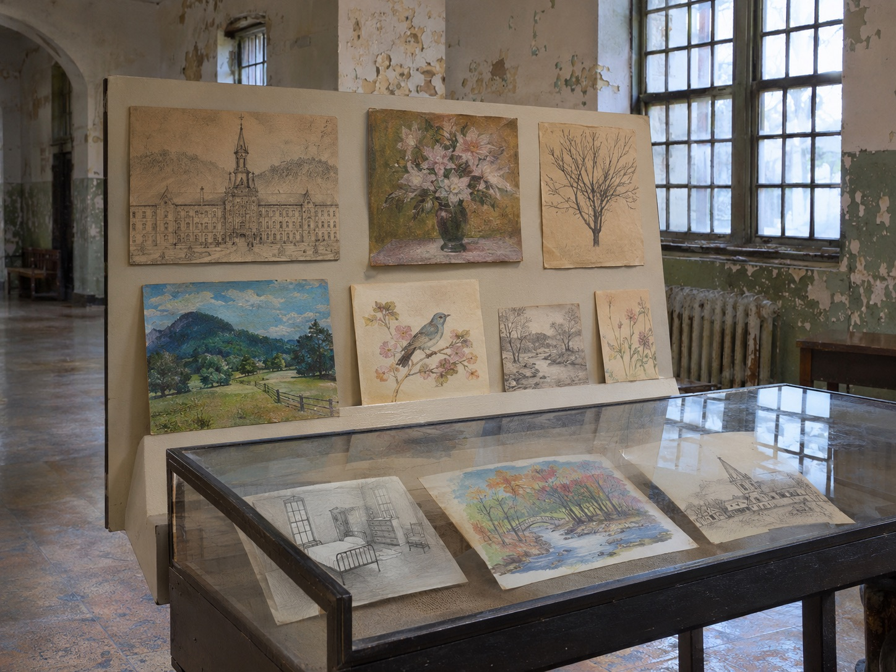

Patient Artwork
Trans-Allegheny Asylum | Weston, West Virginia
The Artifact
Among the historical materials displayed at the Trans-Allegheny Asylum is artwork created by former patients of Weston State Hospital. Such objects offer a perspective on institutional history that differs from official records, architectural plans, and administrative reports.

Its Story
The institution that later became Weston State Hospital opened during the Civil War era and continued operating until 1994. Throughout its history, patients experienced changing approaches to psychiatric care, institutional living, and treatment.
Artwork produced by patients can be an important part of understanding life inside psychiatric institutions. Creative works may preserve an individual's expression in ways that official medical and administrative documents cannot.
However, the surviving photograph does not establish the artwork's creator, exact date, original purpose, or circumstances of production. Those details should not be invented or inferred from its appearance.
Connection to the Building
The Trans-Allegheny Asylum is widely recognized for its monumental architecture and long institutional history. Its physical structure reveals the ambitions and limitations of nineteenth-century psychiatric hospital design.
Patient-created objects add a different dimension to that history. They remind us that the institution was not simply a building or a medical system. It was also a place where thousands of individual lives unfolded.
Preserving these works creates an opportunity to examine the experiences of patients without reducing their lives to sensationalized stories or haunting legends.
Sources and Image Credit
Itinerant Wanderer. (2010). Trans-Allegheny Asylum - Patient Art [Photograph]. Original photograph
Library of Congress. (2015). The Trans-Allegheny Asylum in Weston, West Virginia. Historical and architectural record